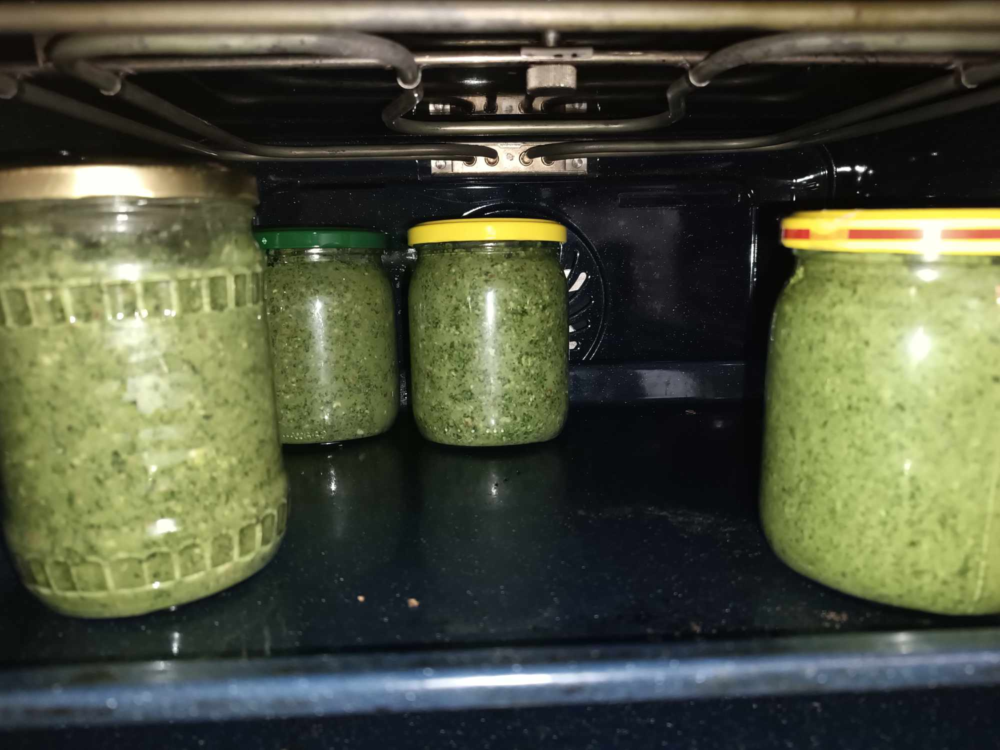
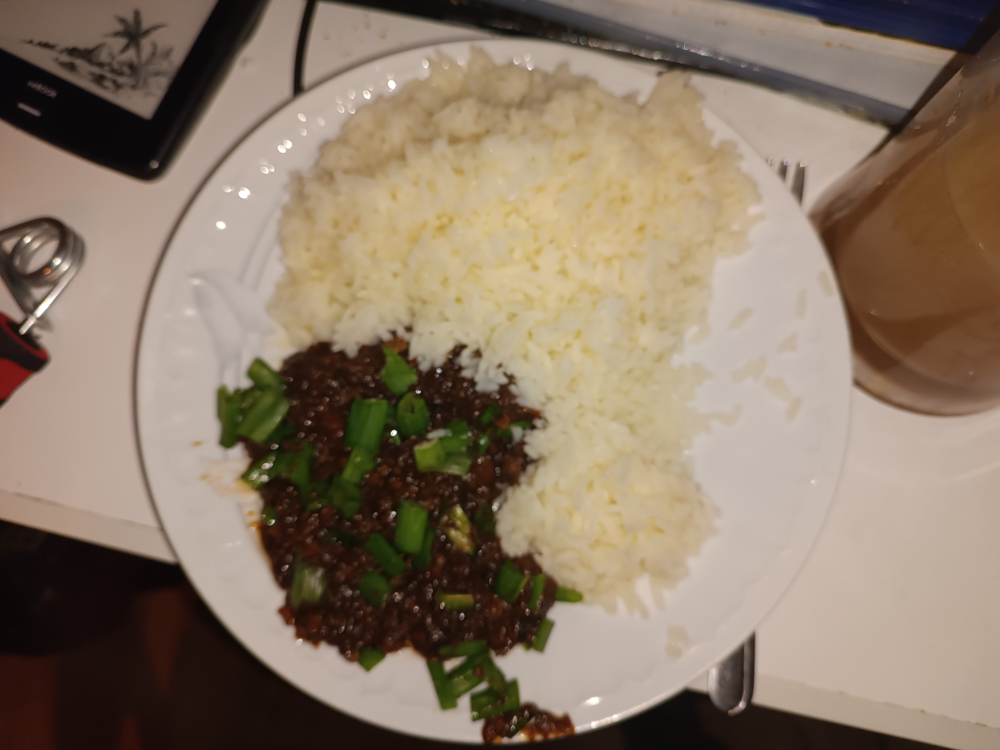
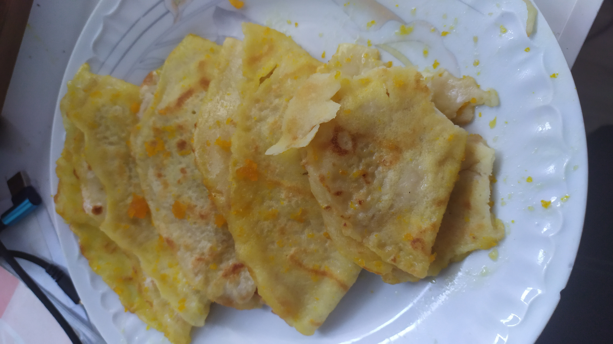
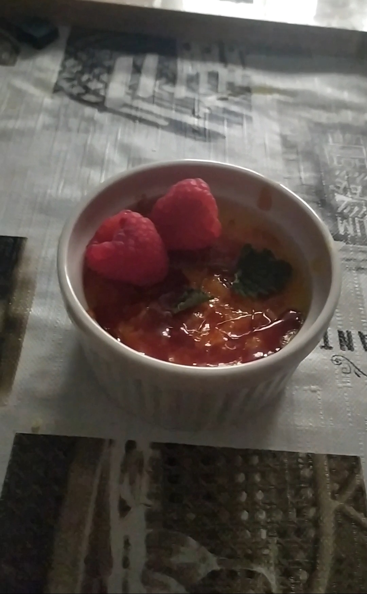
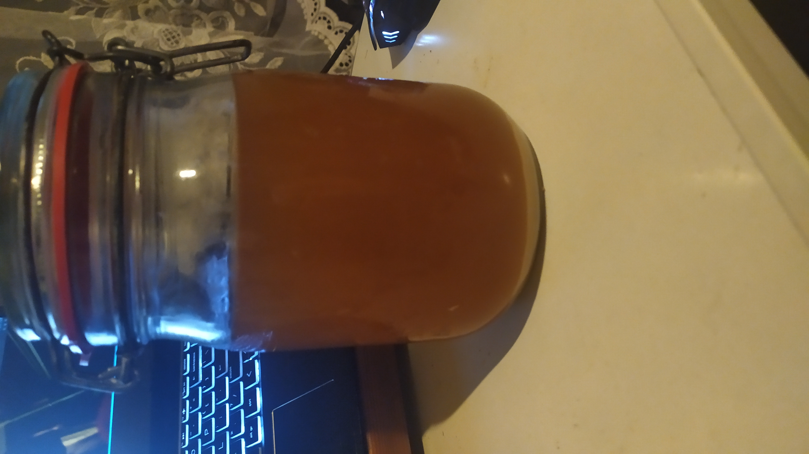
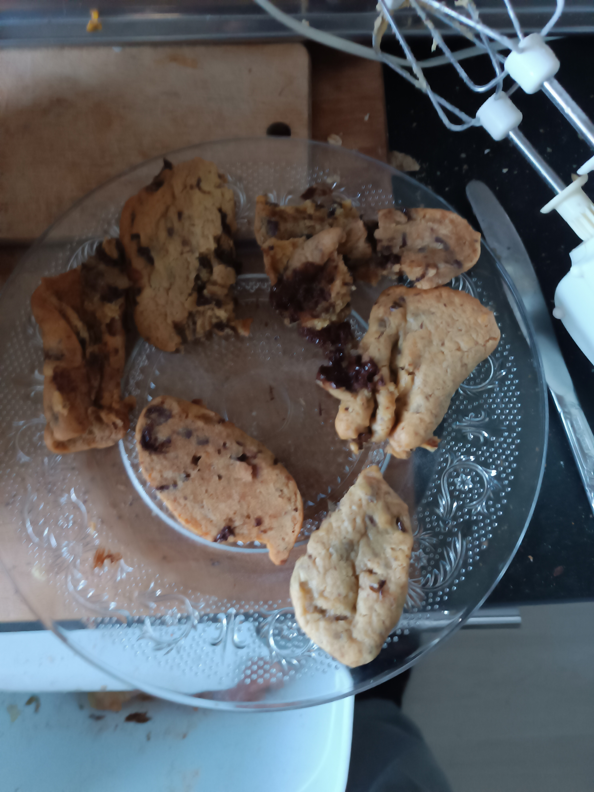

Croque Madame
Naprawdę dobre i "luksusowe" danie zrobione z dość prostych składników,
mimo użycia chleba zjada się je używając widelca i noża.
Składniki:
-Chleb, najlepiej razowy/wieloziarnisty 2 kromki
-Ser żółty w plasterkach
-Dowolna wędlina w plaserkach
-Musztarda (najlepiej Francuska)
-Szczypiorek lub inne zioła do koloru i smaku
-Sól i pieprz
-Masło (do smażenia chleba i jajka)
-Jajko -Sos beszamelowy z serem (opcjonalne, przepis podam kiedyś)
Chleb smarujemy z obu stron cieńko masłem i smażymy na patelni, na drugiej
patelni rozpuszczamy masło rozbijamy jajko solimy, pieprymy i dodajemy
szczypior lub zioła, jak chleb się usmaży z obu stron, nakładamy na jedną
kromę po kolei sos beszamelowy (jeśli został wcześniej wykonany), ser
żółty, wędlinę, musztardę i drugą kromkę, na drugą kromkę nakładamy
wcześniej usmażone jajko sadzone.
Moje pokrzywowe pesto
Był to eksperyment w którym popełniłem błąd dodając kefir lub serek
poznański, po przeczytaniu że można zamiast oliwy użyć jogurtu, następnym
razem użyje po prostu ziół po ugotowaniu pokrzyw aby to rozmiękczyć.
Kurczak i wieprzowina w teriyaki
Zostałą mi resztka kurczaka i wieprzowiny panierowanej w mące
kukurydzianej (smakuje jak popcorn, polecam), miałem również gotowy sos
teriyaki w lodówce więc wpadł mi pomysł, ten sos normalnie składa się z
sosu sojowego, i dwóch alkoholi ryżowych, sake oraz mirin, alkohole można
zastąpić sake chyba można wódką, a mirin cukrem lub miodem (nie
sprawdzałem więc to zostawiam na odpowiedzielność czytelników),
sprawdziłem online jakie składniki zazwyczaj idą w parze z takim sosem,
zabrakło mi tylko nasion sezamu (chociaż sam gotowy sos co ciekawe miał go
trochę w składnikach)
Składniki:
-kawałki mięsa najlepiej panierowanego (tak nawet kotlet schabowy może
być, nawet istnieje taka potrawa jak teriyaki katsu), ok 150g
-sos teriyaki (gotowy albo przygotowany) ok 75 ml
-czosnek 4 ząbki (lub granulowany jeśli nie jest cały dostępny)
-imbir sproszkowany (lub cały obrany, podobna sytuacja jak z czosnkiem)
-trochę wody (aby zachować odpowiednią gęstość sosu)
-ryż (jako dodatek)
-sól (w moim przypadku niezbyt wiele było potrzebne bo gotowy sos już miał
trochę soli w sobie)
-mąka kukurydziana lub ziemniaczana (jeśli sos nie ma żadnych zagęstników,
mój miał, więc nie mogę stwierdzić ile potrzeba w przypadku np
przygotowanego sosu teriyaki)
-szczypiorek (ozdobnie i do poprawy smaku)
opcjonalnie do poprawy smaku:
-jakiś rodzaj tłuszczu (ja dałem olej z awokado)
-ocet ryżowy (smakuje jak słaby ocet spirytusowy połączony ze słodyczą)
Wstawiamy i przygotowujemy ryż według własnych upodobań, a na patelnii
wlewamy sos teriyaki i doprowadzamy go do gęstości może trochę mniejszej
niż keczupu dodajemy wody jeśli gęstość będzie zbyt wielka lub wody
wymieszanej z wymienioną mąką jeśli będzie ona za mała, dodajemy czosnek i
imbir (jeśli są to całe rośliny to najlepsza będzie wyciskarka lub
pokrojenie na małą kostkę), podgrzewamy przez kilka minut (ważne żeby nie
jeść surowej mąki), jak smak jest dobry wsypujemy mięso i mieszamy, można
po tym od razu jeść z ryżem.

Crepe suzette
Do wykonania crepe suzette potrzebne są naleśniki (uważam że raczej tak
podstawowego przepisu nie trzeba podawać), tutaj zamierzam podać przepis
na sos, osobiście robię go ze świeżych pomarańczy, natomiast raczej gotowy
sok i skórka ze sklepu też powinna się nadać. Taka porcja sosu powinna
wystarczyć na 10 naleśników.
Składniki:
-Cukier 150g (tu akurat preferencja jest ważna)
-Cała kosta masła 200g
-Sok pomarańczowy 360 ml
-Skórka (ilość według preferencji)
-Sok
z cytryny (opcjonalne)
-Szczypta soli
Najpierw masło rozpuszczamy na patelnii i jak się
rozpuści dajemy skórkę aby się trochę przysmażyła, po tym dodajemy cukier
i mieszamy, po przeczekaniu chwilę, dodajemy sok pomarańczowy i znowu
mieszamy, gotujemy do czasu osiągnięcia "syropowatej" konsystencji.

Creme brulle
Naprawdę ładny deser, w normalnym przypadku karmel przygotowywany jest za
pomocą palnika, jednakże tutaj używam metody z patelnią, jest to ilość na
1 porcję oraz potrzebne są żaroodporne kokilki aby to wykonać (i to
konkretny rozmiar, na moim tyle starczy)
Składniki:
-1 Żółtko jajka
-1 i 3/4 Łyżki cukru (1 na karmel, 3/4 do kremu)
-trochę miodu (na
karmel)
-Aromat/ekstrakt waniliowy (opcjonalne)
-Śmietanka 100ml
Szczypta soli
Zółtko z cukrem ubijamy dość mocno, dodajemy ekstrakt, mieszamy, dodajemy
śmietankę, solimy i mieszamy ponownie, wstawiamy piekarnik na 120 stopni
celcjusza, po wlaniu do kokilki wstawiamy na 45 minut, po wszystkim
czekamy na ostygnięcnie i wkładamy do lodówki lub na dwór na minimum pół
godziny, gdy czas upłynie przygotowujemy karmel dając cukier, niewiele
miodu i wodę, mieszamy tylko raz do czasu aż cukier i woda się połączą w
jedno, na średnim ogniu gotujemy dopóki karmel nie zmieni się w dość mocno
brązowy i będzie nieco przypalony (jak pojawią się pierwsze dymy),
karmelem zalewamy krem w kokilce równomiernie.

Kwas chlebowy
To picie jest chyba najbliższą rzeczą jeśli chodzi o prostą domową
produkcję piwa, w moim przypadku jako że mamy domowy razowy chleb mam z
czego wytwarzać kwas, u innych może to być większy problem, ale jeśli
pozostała resztka (i nie ma pleśni) to zawsze można zrobić nawet małą
ilość.
To jest ilość na około 1.5 litra
Składniki:
-Chleb razowy 2 kromki (im więcej melazy tym lepiej)
-Zakwas (najlepiej, jeżeli nie jest dostępny drożdże błyskawiczne
wystarczą)
-Rodzynki (powiedzmy 20, 10 na każdą fazę)
-Woda 1.5 litra
-Cukier 75g-100g (uważam że więcej cukru to lepszy pomysł)
Chleb razowy musi zostać przypieczony dość mocno (ale nie zwęglony), jak
zostanie to wykonane to przygotować podaną ilość wody i ugotować ją (można
też użyć czajnika elektrycznego), gdy już to zostanie wykonane zdjąć
garnek ze źródła ciepła, dodać do garnka przypieczony chleb oraz część
przygotowanych rodzynek, przykrywamy garnek i czekamy kilka godzin. Po
kilku godzinach pozbywamy się wszystkiego co stałe (ale nie wyrzucamy,
można trochę cieczy wydobyć, najlepiej przygotować oddzielny słoik na
ciecz wyciśniętą bo może się różnić od "normalnej"), tu się przyda sitko,
im ma drobniejsze dziurki tym lepiej, przy jego pomocy przelewamy do
słoików (najlepiej na klips). Po tym dodajemy cukier, zakwas/drożdże i
rodzynki, najlepiej wymieszać, po wszystkim zamykamy słoiki i odstawiamy w
ciepłym miejscu i czekamy 2-3 dni, powinny być widoczne bąbelki, jak
rodzynki wypłyną na górę należy je wyjąć lub zjeść (są jadalne), kwas
najlepiej przechowywać w lodówce. W moim przypadku po dobrym
przeczyszczeniu kwas miał się całkowicie dobrze przez 10 dni, po tym
okresie zaczął być nieco cierpki, ale nie był nieprzyjemny, nie wiem
jeszcze co się dzieje dalej, możliwe że poprawię ten wpis aby podać więcej
szczegółów.

Pieguski/ciastka z czekoladą
Fajny deser jeżeli nie wiesz co zrobić z gorzką czekoladą, uwaga co do
sekcji z cukrem, w teorii można dać pół na pół cukier i miód, ale w moim
przypadku musiałem poczekać przez trochę czasu bo ciastka płynne wyszły.
-220g cukru (normalnie stosuje się z brązowym, ale z białym też wyszło)
-100g (pół kostki) masła
-1 jajko
-190g mąki białej (uniwerdalnej/tortowej)
-1/4 łyżeczki sody oczyszczonej
-1/2 łyżeczki soli
-gorzka czekolada (zależy od preferencji, jeśli dobrze pamiętam na 2
porcje tego przepisu użyłem całą tabliczkę)
Najpierw trzeba masło rozpuścić, gdy jest już płynne łączymy z cukrem oraz
jajkiem i (najlepiej mikserem) łaczymy w jedną masę, po tym dodajemy całą
resztę składników, czekoladę rozbijamy na małe kawałki. Układamy z ciasta
ciastka na papierze do pieczenia i wkładamy do piekarnikA, 190 stopni
celcjusza, 13 minut.
